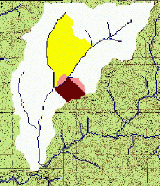
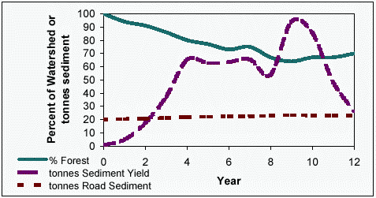

Rocky Mountain Research Station
Moscow Forestry Sciences Laboratory
1221 South Main Street, Moscow, ID 83843
https://forest.moscowfsl.wsu.edu/
| USDA Forest Service | Rocky Mountain Research Station | Moscow FSL | Soil and Water Engineering |
|---|
William J. Elliot and Randy B. Foltz
Summary
Many of the forests in the U.S. and elsewhere in the world are source areas
for water. The quantity and quality of this water are major public concerns.
In a forested watershed, any road segment, harvesting operation, or other management
activity can adversely impact forest streams. These disturbances are distributed
in both time and space. The disturbance in the first year may have minimal impact
on the hydrologic integrity of the watershed, but if the disturbance in the
following year is added to the first, and the disturbance in year 3 added to
those in years 1 and 2, the net effect may be detrimental to the beneficial
uses of the stream. A model to address this cumulative impact is sometimes referred
to as a cumulative effects model. This paper presents the application of the
GeoWEPP Geographic Information System (GIS) tool to evaluating cumulative effects
in forests due to fuel management activities. An example is given to demonstrate
the utility and limitations of the current tool.
Key Words: Watershed Analysis, Soil Erosion
Introduction
Forests provide society with numerous resources including fiber, food, recreation,
and water. Activities associated with obtaining some of these resources may
adversely affect others. One conflict, in particular, is that any disturbance
associated with obtaining fiber or food, and many recreational activities, can
adversely impact forest water quality.
A single disturbance in a given year is seldom a problem. Forest watersheds
are able to recover within a few years from most single disturbance events,
including disturbances as extreme as wildfire. As more disturbances are added
during a year, and additional disturbances in the years that follow, the forest
is less likely to recover to an undisturbed condition. The cumulative effects
of numerous disturbances over a number of years must be considered to be able
to manage forests for multiple uses.
The Water Erosion Prediction Project (WEPP) (Flanagan and Livingston, 1995)
was developed by a number of United States Department of Agriculture research
and management agencies. Scientists at the Rocky Mountain Research Station and
elsewhere parameterised the model for forests (Elliot and Hall, 1997). The WEPP
model was released with both a “hillslope” and a “watershed”
version. Developing topographic input files for the watershed version was not
easily achieved until in 2001, when a Geographic Information System (GIS) tool
was developed to assist in spatial analysis and visualization of erosion distribution
(Renschler et al., 2002).
Application of GeoWEPP to Watershed Analysis
To evaluate the suitability of the GeoWEPP tool, an example study was carried
out on a 1490 ha watershed about 25 km north of Moscow, Idaho (Figure 1). The
GeoWEPP tool divided the watershed into 33 hillslopes, and 13 channel segments.
The watershed is currently under consideration for significant fuel reduction
activities, including small diameter logging in year one, prescribed fire in
year 2, and recovery of hydrologic stability and vegetative cover during the
next five years. Table 1 shows the sequence of vegetation and soil properties
necessary to sequentially describe these disturbances and recovery years.
 Figure 1. Output from year 12 of simulations. Areas near outlet have recovered, and areas near the center of the watershed are recovering from forest operations and prescribed fire. The darker the area, the greater the erosion rate. Predicted erosion rate in the white is zero, the lighter shade, 0.1, the medium shade, 0.3, and the dark shade 1.4 t/ha.
Table 1. WEPP vegetation and soil template values used for the analysis, assuming silt loam soil
Year Vegetation Hydraulic
conductivity
(mm/h)Rill
erodibility
(s/m)1 Established forest 28 0.0004 2 Harvest: 80 percent cover, young forest 23 0.0004 3 Burn: 80 percent cover, low severity fire 13 0.0005 4 90 percent cover, short grass 11 0.0004 5 95 percent cover, tall grass 23 0.0004 6 95 percent cover, young forest 23 0.0004 7 100 percent cover, young forest 23 0.0004 8 Established forest 28 0.0004
To demonstrate the application of GeoWEPP, each year a hillslope was selected, starting with hillslopes at the bottom of the watershed, to initiate the fuel reduction sequence. We assumed that all other hillslopes were covered in forest at the start of the simulations. Figure 2 shows the sediment yields for the first 12 years of analysis, for both the disturbed hillslopes and the road network. Note that the first year assumed that all hillslopes were undisturbed, and the majority of the soil erosion was from the road. During the years of this example, the sediment yields varied between 40 and 90 tonnes, depending on the size and location of the disturbed hillslopes.
To consider the sediment from roads, sediment delivery was modelled assuming a road erosion rate of 1.33 t/km on roads with heavy traffic, and 0.67 t/km for roads with light traffic. These values were estimated with the WEPP model for multiple 60-m long road segments with gradients of 4 percent, distances of 20 m between the road and the stream, and with buffers covered in forest. The rill erodibility value was reduced from 0.0003 s/m for the road with traffic to 0.000075 s/m for the road with low traffic, to reflect the observed surface armouring on roads without traffic (Foltz, 1998). It is apparent from figure 2 that the sediment from the road accounts for about a fourth of the sediment generated from human disturbances during active years, and 96 percent of the sediment in the absence of disturbances. The road sediment delivery values are approximate estimates in this study, as a detailed road map was not available. The relative importance of roads in the analysis, however is unlikely to change with greater detail.
 Figure 2. Percent of watershed in forest during the first 12 years of fuel reduction in watershed, and the associated sediment yields from roads and fuel management activities.
To complete the analysis, some users may wish to add in sediment from landslides.
McClelland et al. (1997) found that typical sediment yields averaged over the
20 year return period associated with such events was around 10 t/ha. Operations
are unlikely to decrease this value, but a more dense road network could increase
it.
Currently, the WEPP model predicts only surface runoff. Observations in many
steep forest watersheds have shown that over 99 percent of all runoff is subsurface
flow. Work is ongoing to incorporate subsurface flow into the WEPP model (Wu
et al., 2000).
In summary, we have presented the application of the new GeoWEPP spatial analysis
tool to cumulative watershed effects analysis. At this time, the tool is run
for each year of disturbance. If desired, users can then add the sediment impact
due to roads, wildfire, or landslides.
Elliot, W. J. and D. E. Hall. 1997. Water Erosion Prediction Project (WEPP) forest applications. Ogden, UT: U.S. Department of Agriculture, Forest Service, Intermountain Research Station. Gen. Tech. Rep. INT-GTR-365. 11 p.
Flanagan, D. C. and S. J. Livingston. 1995. WEPP User Summary, USDA-Water Erosion Prediction Project (WEPP). W. Lafayette, IN: USDA-ARS National Soil Erosion Research Laboratory. 123 p.
Foltz, R. B. 1998. Traffic and no-traffic on an aggregate surfaced road: Sediment production differences. Proceedings of the seminar on environmentally sound forest roads and wood transport. Sunnia, Romania, 17-22 June, 1996. Rome: FAO.
McClelland, D. E., R. B. Foltz, W. D. Wilson, T. Cundy, R. Heinemann, J. Saurbier, and R. Schuster. 1997. Assessment of the 1995 and 1996 floods and landslides on the Clearwater National Forest. Part I: Landslide assessment. Missoula, MT: USDA Forest Service, Region 1. 52 p
Renschler, C. S., D. C. Flanagan, B. A. Engel, J. R. Frankenberger, T. A. Cochrane and R. C. Vining. 2002. GeoWEPP -- The geo-spatial interface for the Water Erosion Prediction Project (WEPP). Online at: <https://www.geog.buffalo.edu/~rensch/geowepp>. Accessed 4 December 2002.
Wu, J.Q., A. C. Xu, and W. J. Elliot. 2000. Adapting WEPP for forest watershed erosion modeling. Paper No. 002069. Presented at the 2000 International ASAE Meeting, 9-12 July, Milwaukee, WI. St. Joseph, MI: ASAE. 9 p.
Elliot, W.J.; Foltz, R.B. 2003. The challenges in developing the WEPP cumulative effects model. In: Wide, M.I.; Hallberg, I., eds. Proceedings: 2nd Forest Engineering Conference. Arbetsrapport, Fran Skogforsk NR 540 Maj 2003. Posters. 55-58. Uppsala, Sweden: Skogforsk. www.skogforsk.se Presented at the 2nd Forest Engineering Conference, 12-15 May 2003 Vaxjö, Sweden
|
|
USDA Forest Service Rocky Mountain Research Station Moscow Forestry Sciences Laboratory 1221 South Main Street, Moscow, ID 83843 https://forest.moscowfsl.wsu.edu/ |
|